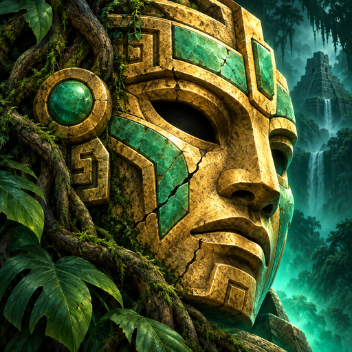
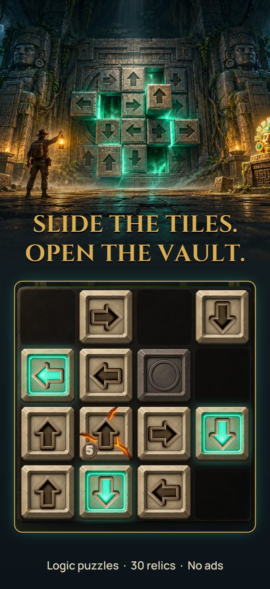
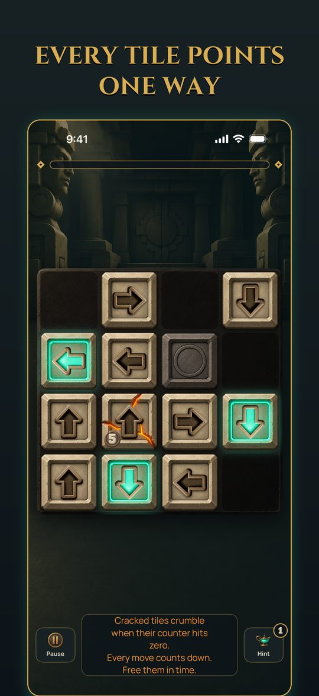
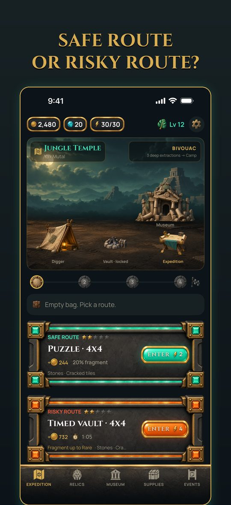
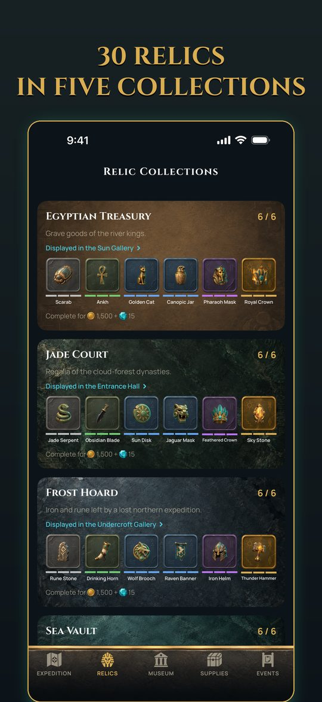
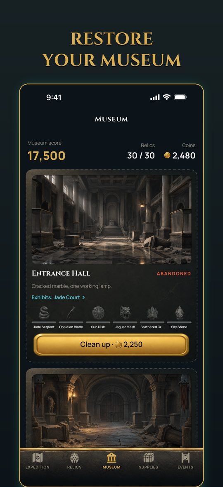

Puzzle Expedition · Oleg Nochka
Slide the tiles. Open the vault.
Every tile on the board carries an arrow, and a tile can only leave when every cell between it and the edge is empty. Work out the order, clear the board, and the vault opens. What you carry out of it rebuilds a museum that starts as a ruin.
Free, for iPhone. No ads.





Tap a tile whose path to the edge is clear and it slides off, which opens the way for the next one. Cracked tiles carry a counter that ticks down with every move, so the order stops being a convenience and starts being the puzzle. Stones never move, locked tiles wait for a key, and nothing is ever hidden from you - every board can be read, and every board is checked to be solvable before you see it.
Four vaults make an expedition. Before each one you choose a safe route or a timed vault that pays three times as much and collapses if the clock beats you. Deeper vaults pay more, so the choice gets heavier the further in you are. Coins bank when the expedition ends; relic fragments always make it out, even from a collapse.
Boards quietly adapt to how you are doing, on your device, with no account and no server involved. If you are struggling they give you more room; if you are cruising they tighten up. You can also set it yourself: Relaxed, Normal or Expert. Levels and rewards never change, only how forgiving the board is.
Free: the whole game. Every region, puzzle and relic can be earned by playing. Tools are bought with the coins you win in vaults, every puzzle has a free hint, and there is a daily chest by the campfire.
Energy paces play: a vault costs 2 (safe) or 4 (risky), the bar holds 30 and refills one point every ten minutes, and Rest gives 8 more for free once an hour.
Optional purchases: gems refill the energy bar at once (10 gems for a full bar) - that is all they buy. A one-time Starter Pack adds 60 gems, two of each tool, a relic and a tent. Every price is the App Store's own, shown on the button before you tap.